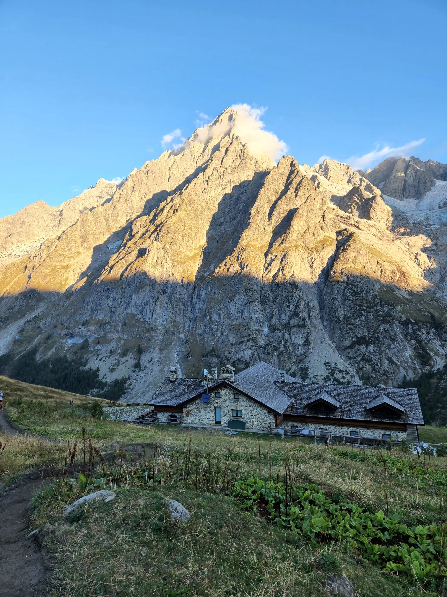

Private pocket
Nothing typed into a private note is uploaded by this static app.

RSG 2026 · Sept 21–Oct 5
The Tour du Mont Blanc field guide built for the trail, the train, and the thin-signal moments between.
Fifteen days · six stages
Critical hiking numbers stay visible before you open a card.
38 mapped places
Supplied GPX tracks and UMAP waypoints over OpenStreetMap. This is a trip overview, not your sole navigation source.
Your itinerary and waypoint directory still work offline.
Download the route in Organic Maps or Maps.me before departure. OpenStreetMap tiles are not guaranteed offline.
Open the source UMAP ↗Public-safe by design
Statuses and logistics are shared. Confirmation codes and private details you add below stay only on this device.
Nothing typed into a private note is uploaded by this static app.
Local trail ledger
$0.00 per person
When plans wobble
Emergency numbers, weather, apps, loose ends, and device-local crew contacts.
France mountain rescue: 112 · Italy: 112/118 · Switzerland medical: 144 · Rega alpine rescue: 1414
Saved only in this browser.